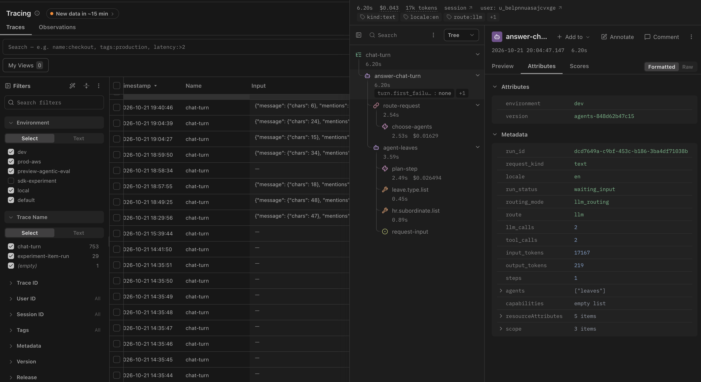

The Tracing table is your shift dashboard. Filter by environment, time range and status before you open a single trace.

How to read this screen
- Status / level: errors stand out from clean completions. Errors usually mean an upstream 4xx/5xx, a graph exception or a validation failure. Warnings often mean partial success or a failed automated check.
- Latency column: sort descending to find the slowest turns after a deploy and compare them with your turn time budget.
- Token and cost columns: when model prices are configured in Langfuse, cost is calculated per trace. Unusually expensive traces often reveal planner loops (many generations in one turn).
- Search and filters: paste a
conversation_id,request_idor trace id from your structured logs, or filter on tags and metadata.
A 15-minute post-release check
- Filter to the production environment and the last hour, or since the release time.
- Filter to errors. Group mentally by root cause: open three or four and see whether they fail in the same observation.
- Clear the error filter and sort by latency. Open the slowest three and check whether the time is in LLM generations or in tool calls.
- Sort by cost. Open the most expensive and count generations. More than your usual number points to replanning.
What the patterns usually mean
| Pattern | Usual cause |
|---|---|
| Many errors in the planner observation | Catalog or schema change, not the model |
Many errors in capability.invoke | Upstream outage, auth changes or circuit breaker open |
| Latency up, generation count unchanged | Provider latency or a slow upstream API |
| Cost up, latency up, more generations | Ambiguous tools or missing lookup results causing replanning |
Saved views
Save the filters you use every day, such as "production errors, last 24 hours" and "slowest turns this week", so the check takes one click. Combine this with alerts on error rate, so regressions surface before QA or users report them.
Terms on this page
- Trace status
- Langfuse rollup of whether the root observation ended in error.
- Error rate
- Percentage of traces with failed observations in a time window.
Your progress in Langfuse Lab0 of 7 complete